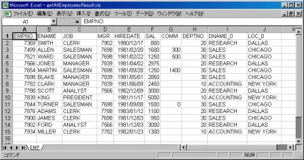
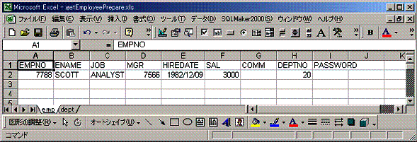
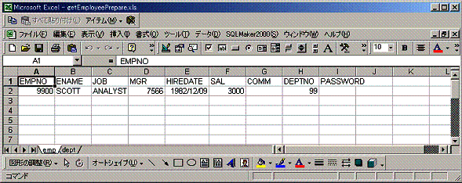
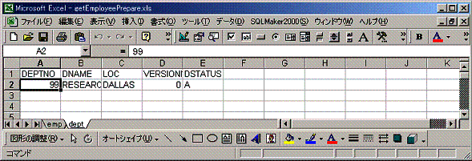
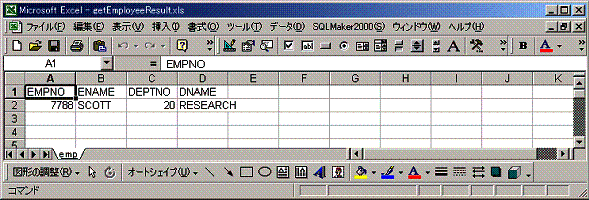
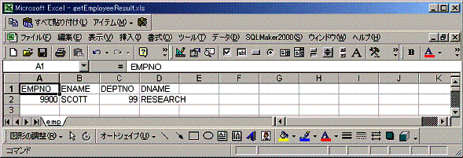

|
 |
|||||
テストの概要S2Containerではコンポーネント同士がインターフェースのみで会話することにより依存関係をなくすということから、 インターフェースの実装が出来上がってからテストを行うことになり開発のボトルネックが発生します。この問題を解決するために、Seasar2ではインターフェースのモックを簡単に作成できます。 実装をモックオブジェクトに置き換えることが可能なため、出来上がった順にテストが出来るので、開発のボトルネックが発生しづらくなります。 またコンテナを使った開発のテストを簡単に行う機能(S2Unit)、データベースに対するテストをExcelファイルで行う機能が提供されています。 S2テストリファレンスモックを作成するための設定インターフェースのモックを設定するには、org.seasar.framework.aop.interceptors.MockInterceptorを使用します。MockInterceptorはS2AOPで提供されているInterceptorです。MockInterceptorの以下のメソッドを使用してインターフェースのモックの設定、インターフェースのメソッドの呼び出し、引数の確認が出来ます。
モックの使用方法インターフェースのモックを作成するには、設定したMockInterceptorをアスペクトして使用します。例えば以下のようなインターフェースがあったとします。
public interface Hello {
public String greeting();
public String echo(String str);
}
このインターフェースのモックを作成する仕様として、greeting()メソッドが呼び出されたときは、"Hello"を返し、echo()メソッドが呼び出されたときは"Hoge"を返すこととする場合、以下のように作成します。
MockInterceptor mi = new MockInterceptor();
mi.setReturnValue("greeting", "Hello");
mi.setReturnValue("echo", "Hoge");
Hello hello = mi.createProxy(Hello.class);
上記のコードをコンポーネント定義で書くと次のようになります。
<component class="examples.aop.Hello">
<aspect>
<component class="org.seasar.framework.aop.interceptors.MockInterceptor">
<initMethod name="setReturnValue">
<arg>"greeting"</arg>
<arg>"Hello"</arg>
</initMethod>
<initMethod name="setReturnValue">
<arg>"echo"</arg>
<arg>"Hoge"</arg>
</initMethod>
</component>
</aspect>
</component>
詳しい使用方法は、Exampleのモックを参照してください。 S2Unitを使ったテストクラスの作成方法テストクラスは、org.seasar.extension.unit.S2TestCaseを継承して作成します。またS2TestCaseはJUnitを拡張したクラスなので、テストメソッド等の使用方法はJUnitと同様です。 S2Unitの機能S2Containerを使った開発のテストを簡単に行えるように以下の機能があります。
データベースに対するテストを行うために以下の機能が用意されています。
Excelファイルの作成検証用のExcelファイルを作成するには、以下のように設定します。作成したExcelファイルはテストクラスと同じ場所に配置するのが一般的です。 
データベースから検証用のExcelファイルを作成することが出来るように以下のクラスが用意されています。
詳しい使用方法はExampleのデータベースに対するテストを参照してください。 S2DaoTestCaseS2Daoで実行したSELECT文の結果(Bean or BeanList)を簡単にテストできるようにS2DaoTestCaseクラスが用意されています。 S2DaoTestCaseを使用するにあたり作成すべきファイルテストを実施するにあたり、テスト対象のDao、JavaBeans、SQLファイル(自動生成の場合は必要ありません)、diconファイル、テストクラス、SELECT文の予想として使用するExcelファイルが必要となります。 Dao、JavaBeans、SQLファイル、diconファイルについてはS2Daoのページを参照してください。 テストクラステストクラスは以下のクラスを継承して作成します。 - org.seasar.dao.unit.S2DaoTestCase また以下の"test"で始まる形式のメソッドを一つ以上実装する必要があります。 - public void testXxx() ExcelファイルExcelファイルはDaoが実行したSELECT文の予想結果として使用します。作成したExcelファイルはテストクラスと同じ場所に配置するのが一般的です。
EMPテーブルを全件検索するSELECT文の結果を予想したExcelのサンプル(getAllEmployeesResult.xls)は以下のようになります。 テスト方法Daoの実行結果と予想したExcelファイルを比較する手順は以下の通りです。
1～3を実装したサンプルは以下のようになります。
DataSet expected = readXls("getAllEmployeesResult.xls"); /* 手順1 */
List actual = dao_.getAllEmployees(); /* 手順2 */
assertEquals("1", expected, actual); /* 手順3 */
S2DaoTestCaseクラスは、S2TestCaseクラスを継承していますので、S2TestCaseクラスやその他のメソッド等の使用方法については、 S2Unitを使ったテストクラスの作成方法を参照してください。 S2DaoTestCaseの詳しい使用方法はExampleのS2DaoTestCaseのExampleを参照してください。 Example以下のサンプルを試す場合は、セットアップを参照して環境を作ってから行ってください。 モックS2で用意されているMockInterceptorを使ってインターフェースのモックを作成して、メソッドと引数が正しく呼ばれていかS2Unitを使ってテストを作成しましょう。作成するファイルは以下のとおりです。
インターフェースの作成
package examples.aop.mockinterceptor;
public interface Hello {
public String greeting();
public String echo(String str);
}
diconファイルの作成
<?xml version="1.0" encoding="Shift_JIS"?>
<!DOCTYPE components PUBLIC "-//SEASAR//DTD S2Container//EN"
"http://www.seasar.org/dtd/components.dtd">
<components>
<component name="mockInterceptor"
class="org.seasar.framework.aop.interceptors.MockInterceptor">
<initMethod name="setReturnValue">
<arg>"greeting"</arg>
<arg>"Hello"</arg>
</initMethod>
<initMethod name="setReturnValue">
<arg>"echo"</arg>
<arg>"Hoge"</arg>
</initMethod>
</component>
<component class="examples.aop.mockinterceptor.Hello">
<aspect>
mockInterceptor
</aspect>
</component>
</components>
テストクラスの作成
package examples.aop.mockinterceptor;
import org.seasar.extension.unit.S2TestCase;
import org.seasar.framework.aop.interceptors.MockInterceptor;
public class HelloTest extends S2TestCase{
//テストクラスと同じパッケージにあるのでパスが省略できる
private static String PATH = "Hello.dicon";
//変数の自動セット
private Hello hello ;
private MockInterceptor mi ;
public void testHello() throws Exception{
//diconファイルでインターフェースのモックが正しく行われているか
assertEquals("Hello", hello.greeting());
assertEquals("Hoge", hello.echo("test"));
hello.echo("Hello");
//echo()メソッドが呼ばれたかどうか
assertEquals(true, mi.isInvoked("echo"));
//echo()メソッドの引数の値が"Hello"かどうか
assertEquals("Hello", mi.getArgs("echo")[0]);
}
protected void setUp() throws Exception {
//S2Containerに対するinclude()メソッド
include(PATH);
}
protected void tearDown() throws Exception {
}
public HelloTest(String arg0) {
super(arg0);
}
public static void main(String[] args) {
junit.textui.TestRunner.run(HelloTest.class);
}
}
コンポーネントの組み立てやコンポーネントの取り出しといった作業はS2TestCaseが自動的に行うので、テストメソッドは必要なことにだけに集中できます。 実行結果"OK (テスト数 test)"と出ていればassertEquals()メソッドで予想した通り結果が得られています。 . Time: 1.643 OK (1 test) この演習は、seasar2/src/examples/aop/mockinterceptor以下に用意されています。 データベースに対するテスト以下のサンプルを動かすためにはHSQLDBを使用しますので、セットアップを参照してHSQLDBを起動させておいてください。ここでは、以下のEMP(従業員)テーブルとDEPT(部署）テーブルを使います。 テーブル：EMP(従業員)
テーブル：DEPT(部署)
SQL文を発行するためのフレームワークとして最も単純なS2JDBCを使ってデータベースに対するテストを行います。 テストをする内容は従業員テーブルを従業員番号で検索するDAOの結果について行います。検索を行うDAOのソースはseasar2/src/exapmles/unit/以下に配置してあります。 シナリオとして従業員番号9900で検索をかけると、従業員番号9900の従業員テーブルと部署番号99の部署テーブルをジョインして返す想定とします。 テストを行う為の手順は以下のとおりになります。
Excelのデータを用意するには、シート名がテーブル名で、シートの第1行にカラム名を2行目以降にデータを記述して作成できますが、ここでは既存のテーブルのデータを利用してテストデータを作成します。 テスト用のテーブルデータを作成するためのファイルは以下のとおりです。
diconファイルの作成
<?xml version="1.0" encoding="Shift_JIS"?>
<!DOCTYPE components PUBLIC "-//SEASAR//DTD S2Container//EN"
"http://www.seasar.org/dtd/components.dtd">
<components>
<include path="j2ee.dicon"/>
<component class="org.seasar.extension.dataset.impl.SqlReader">
<initMethod>#self.addTable("emp", "empno = 7788")</initMethod>
<initMethod>#self.addTable("dept", "deptno = 20")</initMethod>
</component>
<component class="org.seasar.extension.dataset.impl.XlsWriter" instance="prototype">
<arg>"../src/test/examples/unit/getEmployeePrepare.xls"</arg>
</component>
</components>
実行ファイルの作成
package test.examples.unit;
import org.seasar.extension.dataset.impl.SqlReader;
import org.seasar.extension.dataset.impl.XlsWriter;
import org.seasar.framework.container.S2Container;
import org.seasar.framework.container.factory.S2ContainerFactory;
public class Db2Excel {
private static final String PATH =
"test/examples/unit/Db2Excel.dicon";
public static void main(String[] args) {
S2Container container = S2ContainerFactory.create(PATH);
container.init();
try {
SqlReader reader = (SqlReader)
container.getComponent(SqlReader.class);
XlsWriter writer = (XlsWriter)
container.getComponent(XlsWriter.class);
writer.write(reader.read());
} finally {
container.destroy();
}
}
}
実行結果 ../src/test/examples/unit/getEmployeePrepare.xlsが以下のように作成されていることを確認してください。 
従業員番号9900で検索をかけると、従業員番号9900の従業員テーブルと部署番号99の部署テーブルをジョインして返す想定としているので、empシートのEMPNOを9900とDEPTNOを99、deptシートのDEPTNOを99に書き換えて保存します。   2．結果を検証するためのExcelデータの作成結果を検証するためのデータを用意します。このデータも手書きで用意できますが先ほどと同じように作成します。結果を検証するデータを作成するためのファイルは以下のとおりです。
diconファイルの作成
<components>
<include path="j2ee.dicon"/>
<component class="org.seasar.extension.dataset.impl.SqlReader">
<initMethod>
#self.addSql("SELECT e.empno, e.ename, e.deptno, d.dname
FROM emp e, dept d WHERE empno = 7788 AND e.deptno = d.deptno", "emp")
</initMethod>
</component>
<component class="org.seasar.extension.dataset.impl.XlsWriter"
instance="prototype">
<arg>"../src/test/examples/unit/getEmployeeResult.xls"</arg>
</component>
</components>
先ほど作成した実行ファイル(Db2Excel.java)を実行します。 実行結果 ../src/test/examples/unit/getEmployeeResult.xlsが以下のように作成されていることを確認してください。 従業員番号9900で検索をかけると、従業員番号9900の従業員テーブルと部署番号99の部署テーブルをジョインして返す想定としているので、empシートのEMPNOを9900、DEPTNOを99に書き換えて保存します。  3．テストを行うクラスの作成テスト用の従業員テーブルと部署テーブルのExcelデータと結果を検証するExcelデータが作成できたので、それを使って実際にDaoを呼び出して取得したデータの検証をするテストクラスを作成します。 テストクラスの作成
package test.examples.unit;
import org.seasar.extension.dataset.DataSet;
import org.seasar.extension.unit.S2TestCase;
import examples.unit.Employee;
import examples.unit.EmployeeDao;
public class EmployeeDaoImplTest extends S2TestCase {
private EmployeeDao dao_;
public EmployeeDaoImplTest(String arg0) {
super(arg0);
}
public void setUp() {
include("examples/unit/EmployeeDao.dicon");
}
public void testGetEmployeeTx() throws Exception {
readXlsWriteDb("getEmployeePrepare.xls");
Employee emp = dao_.getEmployee(9900);
DataSet expected = readXls("getEmployeeResult.xls");
assertEquals("1", expected, emp);
}
public static void main(String[] args) {
junit.textui.TestRunner.run(EmployeeDaoImplTest.class);
}
}
実行結果 "OK (テスト数 test)"と出ていればassertEquals()メソッドで予想した通りの結果が得られています。 .DEBUG 2004-10-08 13:10:00,762 [main] トランザクションを開始しました DEBUG 2004-10-08 13:10:05,379 [main] 物理的なコネクションを取得しました DEBUG 2004-10-08 13:10:05,469 [main] 論理的なコネクションを取得しました DEBUG 2004-10-08 13:10:05,990 [main] 論理的なコネクションを閉じました DEBUG 2004-10-08 13:10:06,140 [main] INSERT INTO emp(EMPNO, ENAME, JOB, MGR, HIREDATE, SAL, COMM, DEPTNO) VALUES(9900, 'SCOTT2', 'ANALYST', 7566, '1982-12-09 00.00.00', 3000, null, 99) DEBUG 2004-10-08 13:10:06,140 [main] 論理的なコネクションを取得しました DEBUG 2004-10-08 13:10:06,901 [main] 論理的なコネクションを閉じました DEBUG 2004-10-08 13:10:06,911 [main] 論理的なコネクションを取得しました DEBUG 2004-10-08 13:10:07,151 [main] 論理的なコネクションを閉じました DEBUG 2004-10-08 13:10:07,151 [main] INSERT INTO dept(DEPTNO, DNAME, LOC) VALUES(99, 'RESEARCH2', 'DALLAS') DEBUG 2004-10-08 13:10:07,151 [main] 論理的なコネクションを取得しました DEBUG 2004-10-08 13:10:07,151 [main] 論理的なコネクションを閉じました DEBUG 2004-10-08 13:10:07,151 [main] SELECT e.empno, e.ename, e.deptno, d.dname FROM emp e, dept d WHERE e.empno = 9900 AND e.deptno = d.deptno DEBUG 2004-10-08 13:10:07,151 [main] 論理的なコネクションを取得しました DEBUG 2004-10-08 13:10:07,312 [main] 論理的なコネクションを閉じました DEBUG 2004-10-08 13:10:07,392 [main] トランザクションをロールバックしました DEBUG 2004-10-08 13:10:07,492 [main] 物理的なコネクションを閉じました Time: 13.87 OK (1 test) このようにreadXls()で結果検証用のExcelデータを読み込み、Daoの結果と比較することが出来ることが確認できます。また、テストのためにデータベースに格納したデータもすべてロールバックしてもとに戻るため、データのクリーンアップを考える必要がなくなります。 この演習は、seasar2/src/test/examples/unit以下に用意されています。 S2DaoTestCaseのExample以下のSELECT文のテストを行う演習です。 全件検索をするSELECT文（EmployeeDao_getAllEmployees.sql）SELECT emp.*, dept.dname dname_0, dept.loc loc_0 FROM emp, dept WHERE emp.deptno = dept.deptno ORDER BY emp.empno 作成するファイルは以下のとおりです。
※テスト対象のDao, diconファイルはSQL文を記述する場合のExampleのものを使用しています。 Excelファイルの作成
作成(予想)したExcelファイル(getAllEmployeesResult.xls)は以下のようになります。 テスト実行javaファイルの作成
package test.examples.dao;
import java.util.List;
import org.seasar.dao.unit.S2DaoTestCase;
import org.seasar.extension.dataset.DataSet;
import examples.dao.EmployeeDao;
public class EmployeeDaoTest extends S2DaoTestCase {
private EmployeeDao employeeDao_;
public EmployeeDaoTest(String arg0) {
super(arg0);
}
public static void main(String[] args) {
junit.textui.TestRunner.run(EmployeeDaoTest.class);
}
public void setUp() {
include("examples/dao/EmployeeDao.dicon");
}
public void testGetAllEmployees() throws Exception {
DataSet expected = readXls("getAllEmployeesResult.xls");
List actual = employeeDao_.getAllEmployees();
assertEquals("1", expected, actual);
}
}
実行結果DEBUG 2004-09-10 10:55:07,447 [main] 物理的なコネクションを取得しました DEBUG 2004-09-10 10:55:07,447 [main] 論理的なコネクションを取得しました DEBUG 2004-09-10 10:55:08,384 [main] 論理的なコネクションを閉じました DEBUG 2004-09-10 10:55:09,181 [main] SELECT emp.*, dept.dname dname_0, dept.loc loc_0 FROM emp, dept WHERE emp.deptno = dept.deptno ORDER BY emp.empno DEBUG 2004-09-10 10:55:09,181 [main] 論理的なコネクションを取得しました DEBUG 2004-09-10 10:55:09,306 [main] 論理的なコネクションを閉じました DEBUG 2004-09-10 10:55:09,306 [main] 論理的なコネクションを取得しました DEBUG 2004-09-10 10:55:09,353 [main] 論理的なコネクションを閉じました DEBUG 2004-09-10 10:55:09,353 [main] 物理的なコネクションを閉じました Time: 4.844 OK (1 test) “OK(1 test)”と出力されましたので、予想した結果(Excel)とDaoの実行結果が等しいということになります。 |
||||||||||||||||||||||||||||||||||||||||||||||||||||||||||||||||||||||||
| Copyright© 2004-2005, The Seasar Foundation and the others. All rights reserved. |